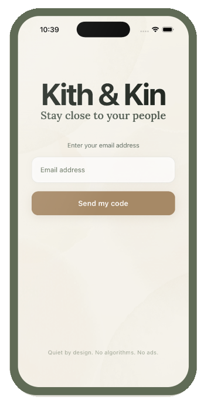
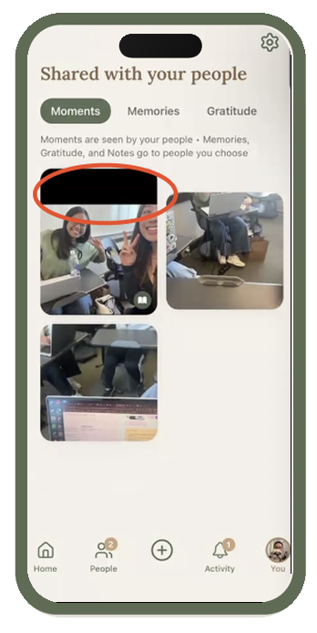

UX Research · Usability Testing
Kith & Kin
Kith & Kin is a usability research project focused on how users interact with the app's sharing and expression features. Through usability testing and user interviews, we explored how intuitive the experience was and identified areas where users experienced confusion or friction.
UX Researcher
Usability Testing · Interviews
Sharing · Expression · Usability
Research Focus
Our research focused on sharing and expression within Kith & Kin, specifically how users interacted with moments, memories, notes, stories, and prompts.
Sharing a Moment
Users were asked to share a moment with a caption.
Sharing a Note
Users were asked to share a note through the app.
Finding a Note
Users were asked to find a note someone had shared with them in their feed.


Usability Testing
We conducted three usability tests focused on sharing and general usability. Participants completed tasks involving sharing content and finding content within the app, followed by a short interview about which workflows felt seamless and which areas felt unclear.
Key Findings
thought the sharing features were similar.
liked having confirmation that sharing was completed.
had trouble finding a note sent to them.
thought the plus button was an intuitive starting point.
Recommendations
Based on the research findings, we developed recommendations focused on improving clarity, giving users more control, and creating stronger distinctions between the app's different features.
Add a recall method
Add a recall method for all posting methods to give users more control and understanding.
Differentiate features
Differentiate the style and functionality of the Moments, Memories, and Gratitude pages.
Add a tutorial
Add a walkthrough or tutorial explaining how to use the different areas of the app.
Improve wording
Refine wording so that each action more clearly communicates what users can expect.
Takeaway
This project strengthened my ability to conduct usability testing, identify patterns across user feedback, and translate research findings into actionable design recommendations. It also showed how details such as wording, confirmation, navigation, and visual differentiation can affect how users understand and interact with an experience.